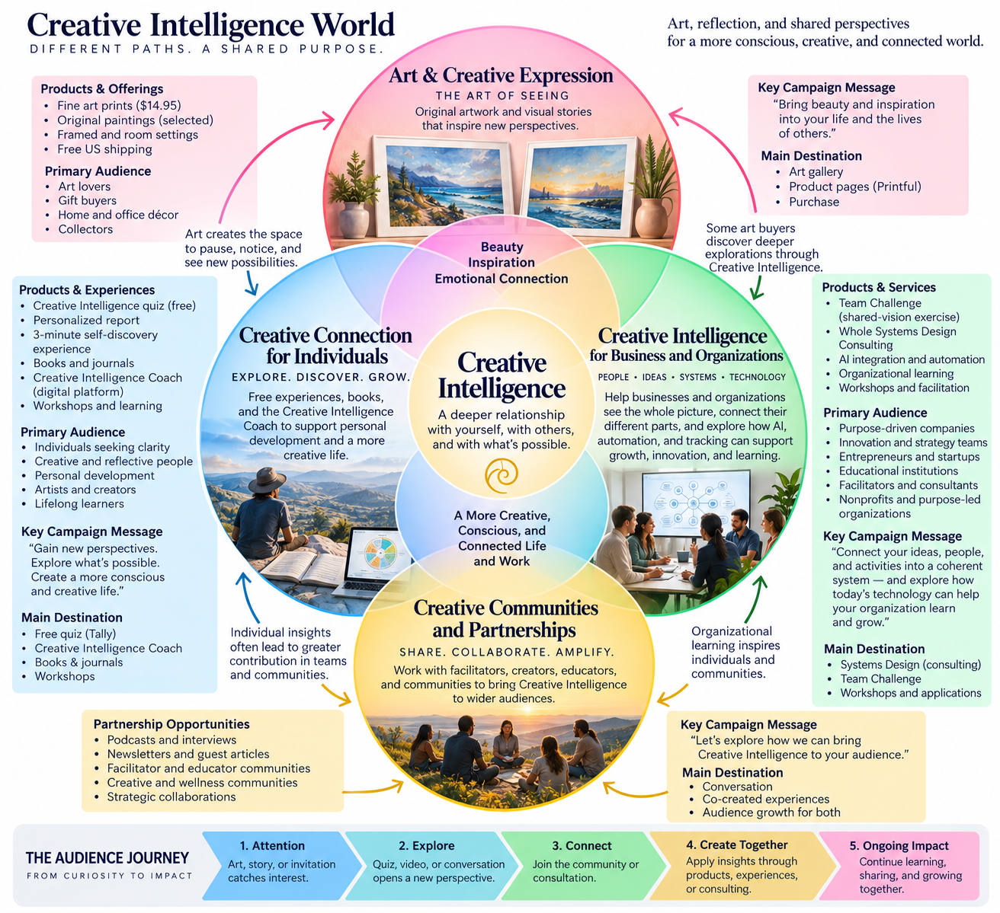

01 / DISCOVER
Map the whole system
Understand your products, people, customers, activities, and the relationships that connect them.
Developing several ideas, products, or services? Or leading a business whose parts could work better together? We help you see the whole system—and explore what becomes possible when its connections come into focus.
Marketing, products, customers, teams, technology, and partnerships are often developed separately. Yet the greatest opportunities may lie in the relationships between them.
Whole Systems Design helps reveal those relationships, identify overlooked possibilities, and create a coherent direction for learning and growth.

Understand your products, people, customers, activities, and the relationships that connect them.
Identify where ideas, teams, and services could reinforce one another rather than operate in isolation.
Develop practical experiments, meaningful feedback signals, and a direction that can evolve with experience.
We use four fluid perspectives to expand understanding—not to categorize people or prescribe answers.
What might this organization become?
What is happening across the system today?
What connections could transform how it works?
What direction is emerging—and what could we try next?
We begin with your purpose, not with technology. Then we examine where automation, tracking, and AI assistance can support a more responsive organization—while keeping people responsible for decisions.
Help relevant customer, sales, and operational signals reach the people who need them.
Explore practical automations that free time for judgment, creativity, and relationships.
Define useful measures, observe real outcomes, and adjust based on evidence.
A clear picture of the business, its relationships, and the opportunities they reveal.
A focused view of where coordination, automation, or information sharing may create value.
Practical next experiments, responsibilities, and feedback signals to guide development.
Our own work brings art, individual exploration, organizational learning, and creative partnerships into one evolving design. This map illustrates the intended relationships; real-world participation and feedback determine how the system develops.
Whether you're starting something new or rethinking an existing organization, we can begin by exploring what you have—and what you might be overlooking.
Schedule a 30-Minute Discovery Conversation →Explore your possibilities. No obligation. Just a conversation.